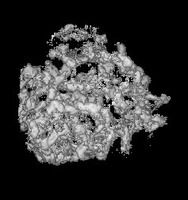
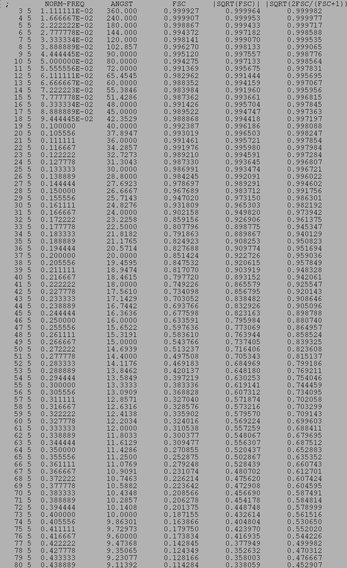

(Surface View)
(Surface View)

| .OPERATION: | FSC [half],[sf],[res] | ; Fourier shell correlation and resolution |
| .FIRST INPUT VOLUME: | sav_fscvol_1 | ; First volume (input) |
| .SECOND INPUT VOLUME: | sav_fscvol_2 | ; Second volume (input) |
| .SHELL WIDTH (RECIPROCAL SPACE UNITS) & MASKING RADIUS: | 0.5, 0 | ; Shell size (inv), NO soft masking |
| .VOXEL SIZE (A) & RESOLUTION CUTOFF: | 2, 0.5 | ; Voxel size, 0.5 cuttoff |
| .FSC OUTPUT DOC FILE: | fsc_doc | ; Doc file (output) |
| .GNUPLOT FILE: | fsc_plot.gpl | ; Plot of FSC curve (output) |
| FIRST INPUT VOLUME (Surface View) | SECOND INPUT VOLUME (Surface View) | |
|---|---|---|
|  | | |
| sav_fscvol_1 | sav_fscvol_2 |
| OUTPUT FSC DOC FILE (TRUNCATED) | OUTPUT FSC PLOT FILE |
|---|---|
|  | |
| fsc_doc | fsc_plot |